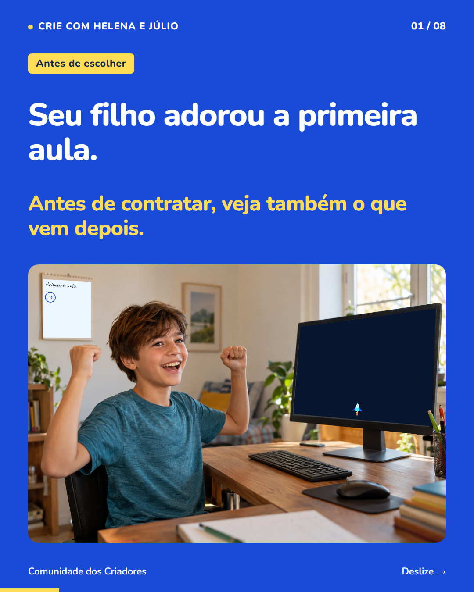
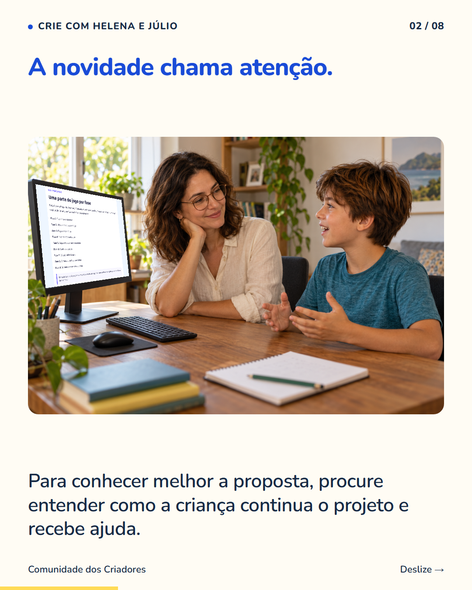
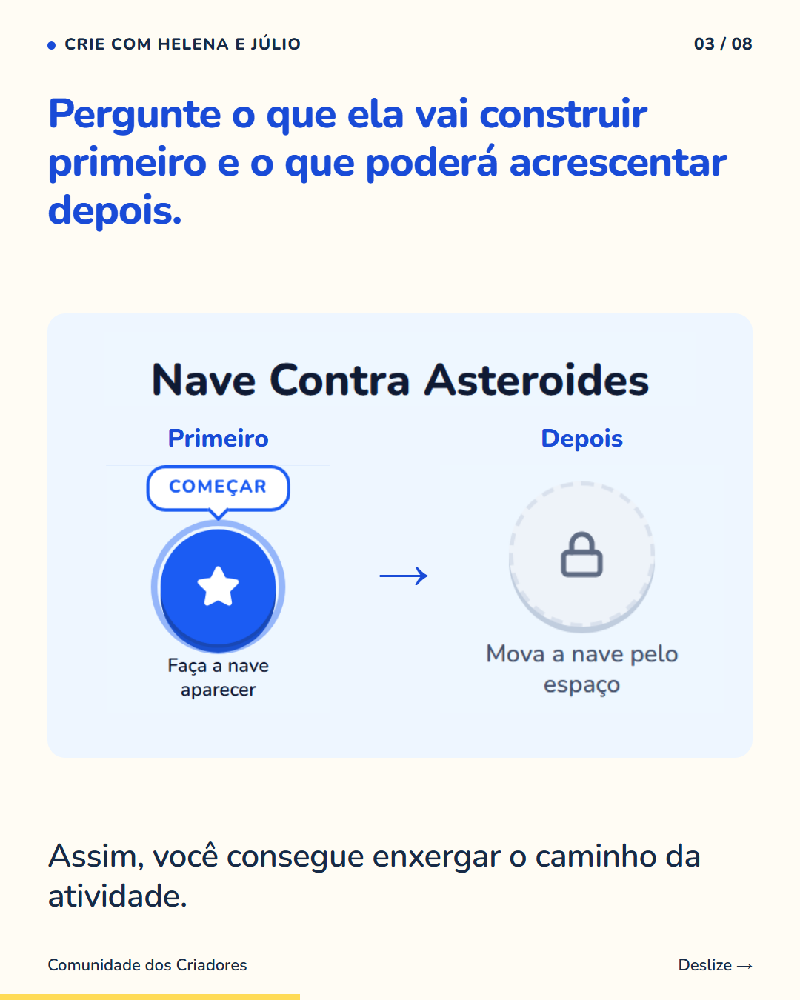
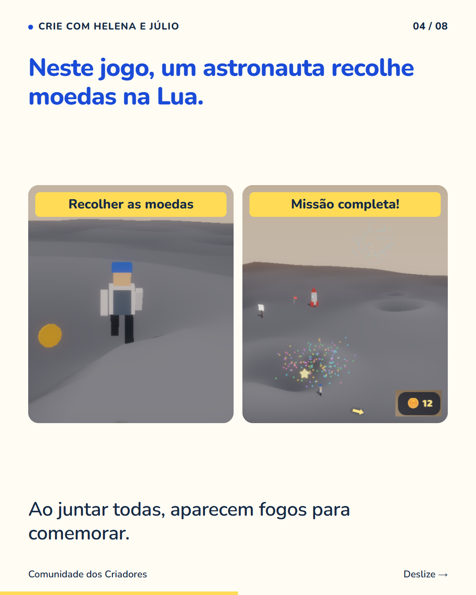
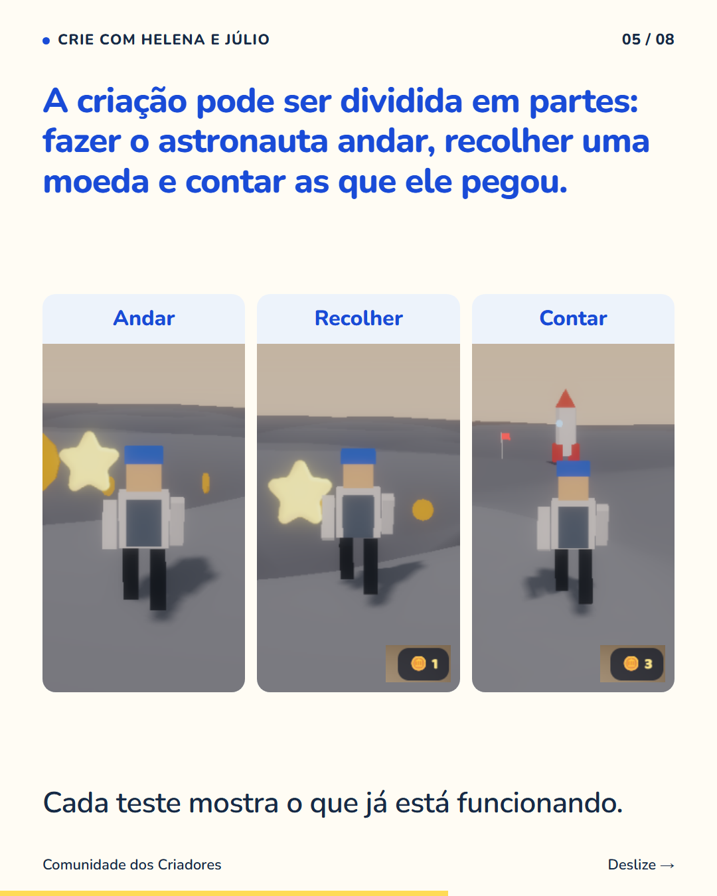
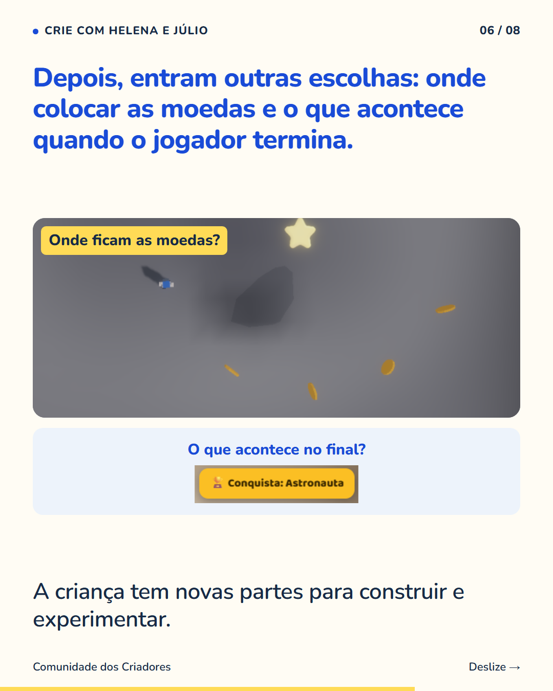
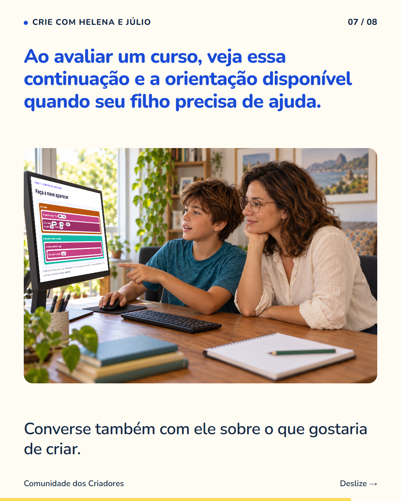
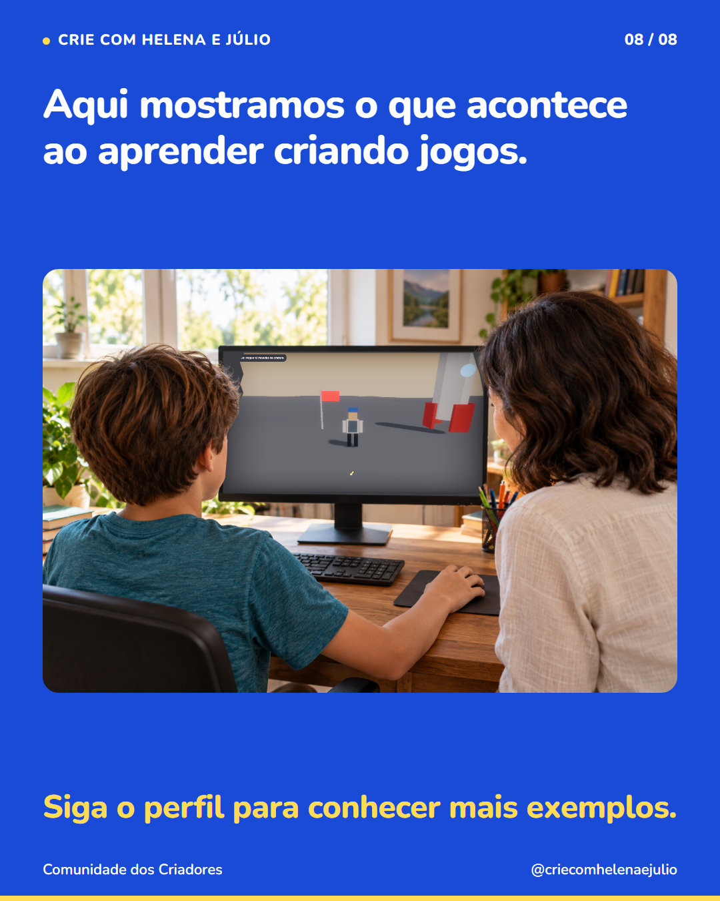

8 slides · 1080 × 1350 · Copy revisada · Continuidade das atividades e ajuda disponível








A primeira aula ajuda a conhecer a proposta, mas não mostra sozinha como será a continuação. Peça para ver as próximas atividades e como uma parte leva à outra. Confira também o que a criança pode fazer quando encontra uma dificuldade: rever uma explicação, consultar uma orientação ou pedir ajuda. Base da Lua é um exemplo da nossa plataforma. Ele mostra como um jogo pode reunir várias tarefas pequenas: movimento, coleta, contagem e uma comemoração final. É uma possibilidade de criação, e não a descrição de um curso específico. Siga o perfil para entender melhor o que seu filho pode praticar ao criar jogos.